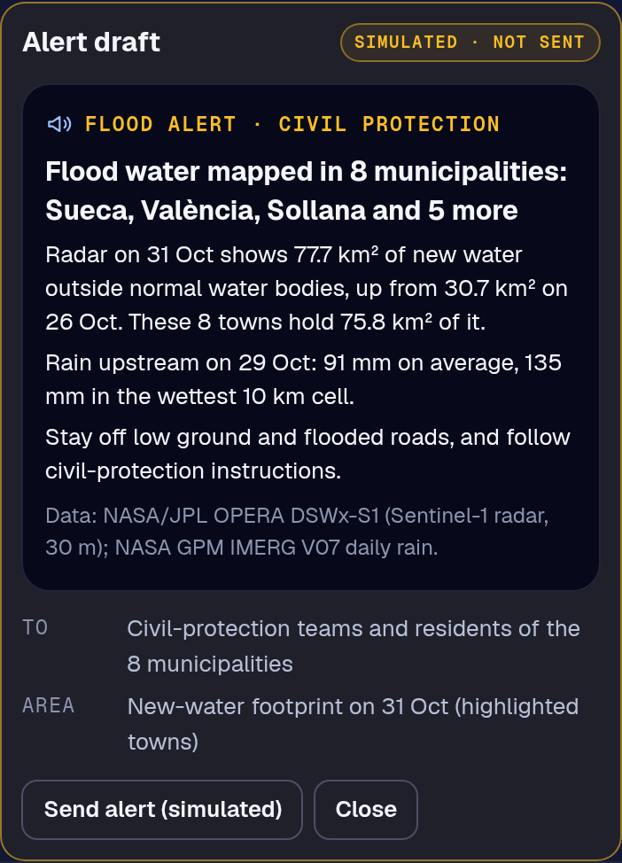
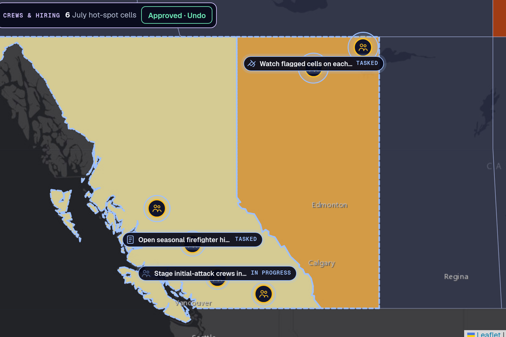
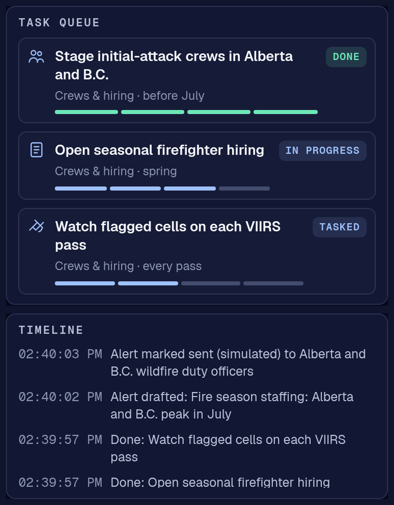
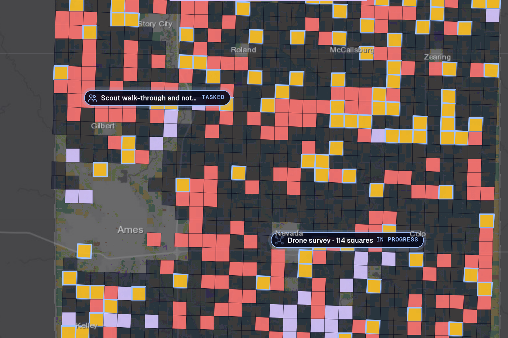
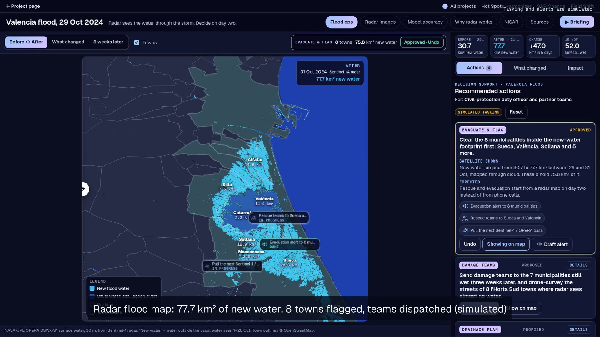

NASA Space Apps 2026 · Be An Earth System Trend Detective! · Orbit to Ground1 / 8
Valencia, Spain
29 October
2024.
771.8 mm of rain fell on one town in a day.
The phone alert went out at 20:11.
By then, at least 156 people had died.
 Radar flood map · 31 Oct · 8 townsTasking (simulated)
Radar flood map · 31 Oct · 8 townsTasking (simulated)
AEMET event study (Turís, 29 Oct 2024) · El País, 26 Oct 2025 · map: NASA/JPL OPERA DSWx-S1Team GeoAI Toronto · Parsa Riahi
Story 1 · the night as it happened2 / 8
A red warning at breakfast. A phone alert after dark.
E
Elena, emergency coordinator, Catarroja
She has to decide which streets to clear, and when to tell people to get off the ground floor.
Red warning for the province
Elena knows heavy rain is coming. She has no map of where the water will go.
616.8 mm in five hours at Turís
The storm sits under thick cloud. Optical satellites see nothing.
The Poyo ravine hits 1,686 m³/s
It hits 2,282 m³/s at 18:55, then the gauge is destroyed.
The phone alert goes out
"Avoid any travel." By then, 112 has taken more than 15,900 calls.
12 h 35 minfrom the red warning to the phone alert. 229 people died in the Valencia region, 25 in Catarroja.
Newtral timeline · AEMET · Reuters, 9 Nov 2024 · La Vanguardia · El País, 26 Oct 2025 · EchoGéo (2025)Orbit to Ground
Story 1 · rewind, with Orbit to Ground3 / 8
Rewind. Same night, same data, with Orbit to Ground.
1SignalRain piles up upstream
91 mm upstream on 29 Oct (135 mm in the wettest cell). 99% cloud: optical is blind.
2MapRadar sees through cloud
77.7 km² of new water (+47.0). 8 towns hold 75.8 km² of it.
3AlertOne alert to all 8 towns
The water area, the rain and "stay off low ground", ready to send.

Alert (simulated)
4DispatchTeams, passes and aid
Rescue teams go to the flagged towns, drones to the streets radar can't see, and the next pass is queued.
 Tasking (simulated)
Tasking (simulated)
With an upstream rain signal and a radar map, Elena could have had a drafted alert for her town hours before 20:11, and a map of where the water went.
Hypothetical rewind · tasking and alerts are simulatedNASA GPM IMERG V07 · NASA POWER · NASA/JPL OPERA DSWx-S1 (26 → 31 Oct)
Under the hood4 / 8
Real data, our own models, honest scores.
Data · all open
- Sentinel-1 radar waterNASA/JPL OPERA DSWx-S1, 30 m
- Rain and cloudNASA GPM IMERG V07 · NASA POWER
- 11.6 M fire detectionsNASA FIRMS MODIS + VIIRS, 2000–2025
- Crops, greenness, soil, terrainUSDA CDL · NASA HLS · SMAP · GRACE · NASADEM
Models and tests
- Radar water modelscored on 90 hand-labelled Sen1Floods11 chips; runs on a CPU
- Fire model with calibrated rangestrained 2012–20, tested on held-out 2022–25
- Next-season crop modeltested on held-out 2024–25, 30 m pixels
- Trends: Mann-Kendall + Sen's slopewe report p-values, and "no trend" when there is none
Scores
66.4%flood IoU, 3.0× the standard threshold (21.8%)
1.63 sper 512 × 512 radar tile on a CPU
8.5%lower fire error than the best baseline
81.8%next-season crop correct, every 30 m pixel
39.4%honest miss: monthly fire totals
p = 0.28no trend in Valencia's wettest day, so we don't claim one
One seed each, not a published benchmark · methods and sources in FORM.md and on the siteOrbit to Ground
Story 2 · before the fire season5 / 8
Hot Spots · Alberta and B.C.A duty officer staffs up, and warns early.

Crews staged before the July peakTasking (simulated)
The trend+1,503 a yearfire detections in Alberta (p = 0.035); B.C. +2,587 (p = 0.045).
The watch monthMay5 of Alberta's 16 unusual fire months since 2000.

Task queue → alert sentSimulated
Staffing alert and notice are simulatedNASA FIRMS, harmonized MODIS + VIIRS · a trend line, not a forecast
Imagine it times twenty6 / 8
You're feeling that now. Imagine it times twenty.
Built · live today

Field Shift · drone + scout on 114 squaresTasking (simulated)
Field Shift: next crop for every field81.8% correct · scout list · farmer view
Hot Spots for Argentina4.15 M detections, falling 1,909 a year
Groundwater watch, eastern SpainGRACE −0.39 cm a year (p = 0.002)
Burn calendar for any area you draw26 years, unusual months flagged
Future · not built yet
Landslide watch after heavy rain
Drought and crop-stress alerts
Smoke and air quality for schools
Heat-wave checks for care homes
The same loop every time: signal → map → alert → task.
Built items are live in the three dashboards · future items are ideas, not resultsOrbit to Ground
Impact · human value7 / 8
From a satellite signal to a decision, in time to act.
Flood · emergency coordinatorWhich towns, and when
Optical satellites see only cloud. Towns are ranked from calls.
A radar water map by town on day two, and an alert draft ready.
77.7 km²mapped through cloud · 66.4% IoU
Fire · duty officerStaff and warn before the season
Crews called in after the fire starts.
Crews staged before July, and a community notice before May.
5 of 16unusual Alberta months in May
Farm · growerWhat to plant next
Plan from habit and last year's field.
A next-crop call and a 4-year plan, with rye on steep fields.
+19 dayslonger frost-free season since 1981
Orbit to Ground.
See it. Decide. Act.
Team GeoAI TorontoParsa Riahi · Toronto, Canada
nasa-spaceapps-2026.pages.dev
Every number comes from our own runs on public data · tasking and alerts are simulated · not affiliated with NASACode Apache-2.0
Product demos · try it live8 / 8
Watch it work. Then open the apps.

Primary demo · flood▶
SAR Change · the Valencia floodrain signal → radar map → alert → dispatchOpen the app →
Tasking and alerts are simulatedOrbit to Ground · Team GeoAI Toronto